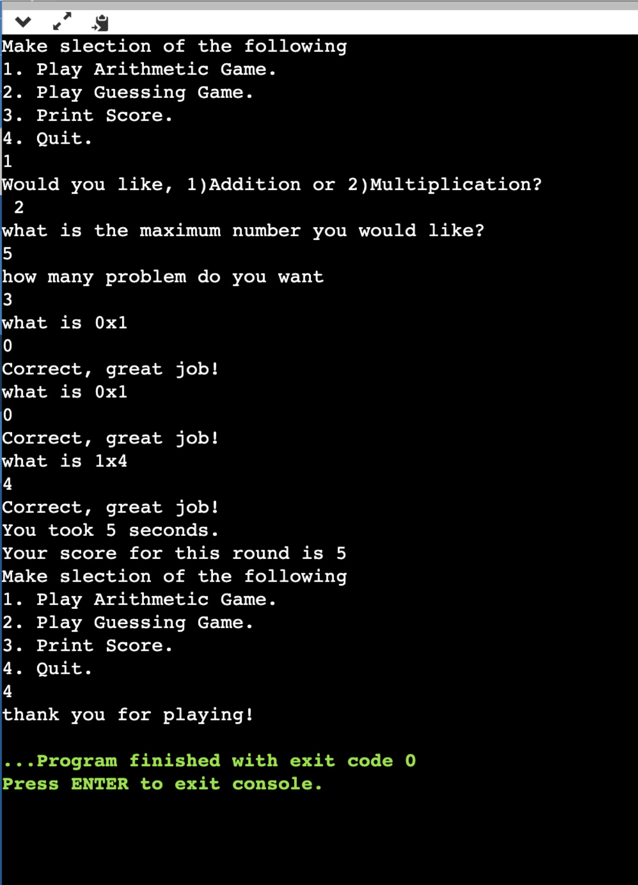

Arithmetic Game

Project Description
For this project, I programmed an arithmetic game in C. The game allows users to choose between addition and multiplication, set their own difficulty level, and decide how many problems they want to solve. It then generates random math problems and provides instant feedback on whether the answers are correct.
Skills Learned
- User Customization: I learned how to use input functions to let users choose their preferred game settings and difficulty levels.
- Random Number Generation: I learned how to generate random numbers so that every math problem is different and unpredictable.
- Real-Time Feedback: I programmed logic to compare the user's answer with the correct one and provide immediate "correct" or "incorrect" notifications.